Fonctionnalités en détail¶
Description complète de ce que fait DevOps Builder ; le README en donne le résumé.
- L'application d'abord : on désigne le dossier de l'application (carte de l'application dans la barre du projet, première page de l'assistant, ou
devops-builder init). L'analyse lit, sans rien exécuter, le langage et son cadre (FastAPI, Django, Flask, Express, Next.js, Spring Boot, Gin, ASP.NET…), le port (EXPOSE du Dockerfile, sinon le port usuel du cadre), le Dockerfile, la CI et la forge déjà en place (fichiers de CI, dépôt distant), un chart Helm, Kustomize, Compose, Terraform ou OpenTofu, les tests, Renovate ou Dependabot, les bases de données (pilotes PostgreSQL, MySQL, MariaDB, MongoDB et Redis dans les dépendances, schéma Prisma, services Compose) et les migrations (Alembic, Django, Prisma, Knex, Sequelize, goose, golang-migrate). Chaque détection donne sa preuve, et les briques qui en découlent sont proposées : sans Dockerfile, l'image est construite par Buildpacks. - Choix restreints par défaut : la palette ne montre que les briques adaptées au projet. Elle écarte ce que la cible, la forge, la politique de licence, SecNumCloud ou le fournisseur cloud refuseraient, ainsi que les rôles déjà tenus (une forge, une CI, un GitOps, un CNI…). Une recherche montre tout, en grisant ce qui ne convient pas avec la raison ; « Adapté au projet » se décoche pour tout voir.
- Données : une étape « Données » entre Infrastructure et Déploiement. PostgreSQL, MariaDB, MySQL, MongoDB, Valkey et Redis tournent à côté de l'application : service Compose non publié sur l'hôte, avec volume, contrôle de santé et sauvegarde (
scripts/db-backup.sh, planifiée par Ansible), ou StatefulSet sur Kubernetes. CloudNativePG gère PostgreSQL dans le cluster (une instance hors production, trois en production) ; Amazon RDS, Cloud SQL, Azure Database, Scaleway et OVHcloud sont décrits en Terraform, une instance par environnement, protégée et répliquée en production. L'application lit toujours l'URL complète dansDATABASE_URL,MONGODB_URIouREDIS_URL; le mot de passe vient d'une variable CI secrète, d'un fichier SOPS ou d'un coffre (voir Secrets), etdeploy/secrets.shou un Secret Kubernetes le transmet, jamais un fichier en clair du dépôt. La brique « Migrations de schéma » lance la commande de l'application avec son image avant chaque démarrage (service Composemigrateou initContainer). L'assistant demande la base et le cache, et choisit la brique selon l'hébergement : service managé du cloud, opérateur sur Kubernetes, conteneur sur un hôte Docker. - Données, côté ergonomie : chaque carte de base affiche son mode (« Conteneur Compose », « StatefulSet », « CloudNativePG », « Service managé ») et la variable lue par l'application ; le panneau Connexion dit d'où vient réellement le mot de passe (variable CI, SOPS, coffre, External Secrets, Terraform). La vue Données (bouton Vues, Ctrl+Maj+D) liste chaque base par environnement — mode, version, taille, connexion, secret, sauvegarde — avec les avertissements des règles et leur correction en un clic. La variable et le format de connexion se règlent dans la brique : URL, JDBC (Spring Boot, Quarkus) ou URL et variables séparées (
<préfixe>_HOST,_PORT,_NAME,_USER,_PASSWORD) ; l'analyse de l'application les reprend du code (spring.datasource.url,os.environ,process.env…).dev/db/compose.yamllance les mêmes bases sur le poste, même version, ports liés à 127.0.0.1, avec Adminer en option et un dossier de données de démonstration ;dev/db/app.envdonne leurs variables.scripts/db-restore.shrestaure une sauvegarde dedb-backup.sh(confirmation--oui), copié sur les hôtes. CloudNativePG sauvegarde pour de bon : plugin Barman Cloud (archivage continu des WAL, sauvegarde quotidienne, rétention 30 jours) vers le stockage objet choisi, bucket et identité créés par Terraform sur EKS (Pod Identity) et GKE (Workload Identity). R46 et R47 signalent une connexion incohérente et un plugin privé de cert-manager. - Prise en charge déclarée : chaque fiche dit ce que les générateurs en font — pris en charge (fichiers générés et passés à l'outil de référence dans les tests), expérimental (généré, avec une limite connue, rappelée par R50) ou à configurer à la main (aucun fichier : la brique sert aux règles et à la documentation, R31). La palette le signale (β, ⚙), comme la carte et le panneau Propriétés ; la matrice complète est dans docs/prise-en-charge.md, et un test la confronte à ce qui est réellement généré.
- Connexion unique (Keycloak, Dex) : deux briques de fournisseur d'identité OIDC. Keycloak tourne sur un hôte Docker derrière Traefik, avec sa propre base PostgreSQL et ses secrets dans le circuit habituel (variables CI, SOPS ou coffre), ou sur Kubernetes par son opérateur officiel (base : Cluster CloudNativePG s'il est dans le pipeline, sinon StatefulSet dédié ; Ingress du contrôleur présent). Son realm est décrit en Terraform dans
infra/keycloak/(providerkeycloak/keycloak) : groupes « admins » et « developpeurs », revendication « groups », client public PKCE de l'application, client confidentiel de chaque outil présent. Dex délègue la connexion à GitLab ou GitHub (groupe ou organisation autorisé). L'application reçoitOIDC_ISSUER_URLetOIDC_CLIENT_ID; Argo CD (oidc.config, rôle admin au groupe), Grafana (OAuth générique, rôle d'après le groupe) et Vault / OpenBao (auth/oidc, politique admin au groupe, ce qui remplace le jeton racine) sont branchés parplatform/install.sh, le service Compose ouscripts/vault-setup.sh. L'assistant demande la connexion unique ; R48 et R49 signalent deux fournisseurs et un fournisseur sans HTTPS sur l'hôte Docker. - Supervision Zabbix : sur un hôte Docker ou des VM, les images officielles 7.4 (serveur, interface web derrière Traefik, agent 2) et une base PostgreSQL dédiée, sauvegardée par
db-backup.sh; le mode d'emploi change le mot de passe Admin par l'API et vérifie l'agent. - Analyse dynamique (ZAP) : un job après le déploiement de l'environnement analysé, dans chaque CI générée — scan de base, complet ou d'API, image à version fixe,
.zap/rules.tsvréglable, rapport publié même en échec, bloquant ou non. - Dimensionnement : le besoin de chaque hôte Docker est calculé à partir de ses services Compose et des environnements qu'il porte ; pour une machine créée par Terraform, le type retenu est comparé au besoin et le plus petit type suffisant est proposé sur chaque cloud (règle R52, correction en un clic).
- GitOps : Argo CD ou Flux surveillent le dépôt saisi sur la brique ; la CI y écrit l'image (dépôt et étiquette) d'un commit
[skip ci], et le mode d'emploi branche Argo CD sans sa CLI. - Secrets : trois sources pour les mots de passe et URL des bases. Par défaut, une variable CI par valeur et par environnement. Avec SOPS, les valeurs vivent chiffrées pour age dans
deploy/secrets/<environnement>.enc.env(.sops.yamlreprend les clés publiques de la brique) et la CI n'a plus qu'une clé,SOPS_AGE_KEY. Avec Vault ou OpenBao, elles vivent dans le moteur KV v2 sous<espace de noms>/<brique>; la CI s'y connecte par le jeton OIDC de GitLab (id_tokens) ou de GitHub (méthodeauth/jwt, rôle réglable), à défaut parVAULT_TOKEN.scripts/secrets-fetch.shcharge les valeurs dans le job juste avant le déploiement (SSH, Ansible, Helm, Kustomize) sans rien écrire sur le disque,scripts/secrets-seed.shles écrit une fois par environnement. Sur Kubernetes, External Secrets lit le coffre (Vault, OpenBao, AWS Secrets Manager, Google Secret Manager, Azure Key Vault) : unClusterSecretStoreappliqué parplatform/install.shet unExternalSecretpar base, dans le chart ou dans chaque overlay, recréent les Secrets que l'application lit déjà ; la CI ne touche plus aux mots de passe, GitOps compris. Avec un coffre du cloud et Terraform, la pile y écrit elle-même l'URL des bases managées (RDS : mot de passe principal géré par RDS) et un mot de passe aléatoire pour les bases du cluster. Vault et OpenBao tournent en vrai serveur (stockage intégré, descellement à faire) ; avec une adresse, c'est un coffre existant, que le pipeline ne déploie pas. R45 prévient quand la CI ne pourrait pas joindre le coffre. L'assistant demande la source des secrets. - Mise en route : chaque projet reçoit
docs/mise-en-route.md, les gestes à faire une fois, dans l'ordre, avec les commandes déjà remplies (noms, régions, espaces de noms, rôles) et une vérification par étape : stockage de l'état Terraform, connexion OIDC de la CI à AWS, Google Cloud ou Azure (fournisseur d'identité, rôle ou compte de service, identifiants fédérés), premier apply, cluster et plateforme, initialisation et descellement du coffre, secrets de chaque environnement (clé age et chiffrement SOPS, écriture dans le coffre), External Secrets, préparation des hôtes, Argo CD ou Flux, variables CI, premier déploiement et entretien. Seules les sections des briques du pipeline y figurent ; les valeurs propres à l'organisation (dépôt, compte) se posent une fois en tête. - Configuration du coffre par script :
scripts/vault-setup.shconfigure Vault ou OpenBao par son API, sans rien supprimer et relançable : moteur KV v2, politiques de lecture limitées aux espaces de noms du projet, méthodeauth/jwtet son rôle pour la CI (jeton OIDC de GitLab ou de GitHub, limité au dépôt et à la branche principale, protégée sur GitLab ; émetteur GitLab autohébergé réglable), méthodeauth/kuberneteset le rôle d'External Secrets (coffre dans le cluster ou hors du cluster). Pour les CI sans jeton OIDC, il donne la commande d'un jeton limité. - Identité d'External Secrets par Terraform : avec un coffre du cloud et le cluster managé du même cloud, la pile donne au contrôleur la lecture des seuls secrets du projet — EKS Pod Identity (rôle IAM et association, module complémentaire), Workload Identity Federation de GKE (accès direct du compte de service Kubernetes), Workload Identity d'AKS (identité managée, identifiant fédéré, rôle « Key Vault Secrets User », émetteur OIDC activé sur le cluster ;
platform/install.shreprend l'identité dans le chart). Plus de jeton ni d'annotation à poser à la main. - Terraform / OpenTofu : l'état vit dans le stockage objet du fournisseur, chiffré et verrouillé (
use_lockfile) sur S3 et dans les stockages compatibles S3 de Scaleway et OVHcloud, qui acceptent l'écriture conditionnelle ; Outscale OOS porte l'état sans verrou. Les clés S3 sont posées par la CI. Sans état distant, R44 prévient que chaque pipeline recréerait les ressources. Les variables sans valeur deviennent des variables CITF_VAR_<nom>et unterraform.tfvars.example;outputs.tfdonne les points d'accès des clusters, des registres et des bases ;.gitignoreécarte état et plans. Le plan vérifie le format (fmt -check), l'apply manuel est sérialisé (resource_groupGitLab,concurrencyGitHub). Providers aws 6, google 7, azurerm 4, ovh 2, module EKS 21 ; OpenTofu 1.13 est installé dans le job, l'image officielle ne servant plus depuis la 1.10 qu'à copier le binaire ; Terraform 1.16. TFLint et Infracost s'ajoutent comme briques. - Floci, l'émulateur AWS local et libre :
dev/floci/compose.yamletdev/floci/aws.envpour le poste, Floci à côté des tests unitaires dans la CI (GitLab, GitHub, Gitea, Woodpecker), etscripts/tf-floci.shqui joue la pile AWS sur l'émulateur, sans compte ni identifiants :plandans la CI (non bloquant),applypuisdestroyen local. L'analyse de l'application le propose quand elle trouve un SDK AWS ou LocalStack. - Ansible : les hôtes de chaque environnement se règlent dans la brique (paramètre « Hôtes de l'application », surchargé par environnement) au lieu d'un exemple figé dans l'inventaire.
ansible/ansible.cfg(lu viaANSIBLE_CONFIG),ansible/requirements.yml(community.docker épinglée) et ansible-core 2.21 installé dans le job. Les hôtes se connectent au registre privé avant de tirer l'image (GitLab, GHCR, Harbor, Scaleway… ; pour ECR, Artifact Registry et ACR, l'identité de la machine), le déploiement passe un hôte après l'autre et attend que les services soient prêts.site.ymlinstalle Docker depuis son dépôt officiel (Debian, Ubuntu, RHEL et dérivées). Sans brique Docker Compose, l'application est lancée seule.SSH_KNOWN_HOSTS(facultatif) fixe les clés d'hôte, pour Ansible comme pour le déploiement SSH. La brique ansible-lint contrôle les playbooks. - Machines créées par Terraform, chaînées à Ansible : pour un hôte Docker ou des VM, l'assistant propose « Serveurs existants » ou un cloud (AWS, Google Cloud, Azure, Scaleway, OVHcloud, Outscale). La pile crée alors un groupe de machines Ubuntu 24.04 par environnement (ou par hôte partagé), avec pare-feu (SSH depuis les plages choisies, web depuis Internet) et cloud-init qui pose le compte de déploiement, la clé de la CI (
TF_VAR_ssh_public_key) et Docker. Sa sortiehostsest lue au déploiement parscripts/tf-inventory.sh, qui écrit l'inventaire Ansible de l'environnement, ou donne l'adresse au déploiement SSH : plus d'adresse à recopier à la main. Nombre de machines, type et disque se règlent dans la brique, par environnement. - Catalogue : 167 fiches vérifiées (outils, services managés, fournisseurs cloud) et l'ensemble du Landscape consultable, soit 1 208 entrées. Les entrées sans fiche sont marquées « non vérifiées ».
- Canevas : dix étapes en colonnes (source → observabilité). On y glisse des briques depuis la palette, ou on les ajoute par double-clic. Chaque outil n'accepte que ses étapes : pendant un glisser, les colonnes compatibles sont mises en évidence, les autres grisées, et un dépôt hors étape est refusé avec un message.
- Assistant de démarrage : Nouveau pose cinq pages de questions (langage, forge, hébergement, cloud, environnements, sécurité, qualité, dépendances, base de données, secrets, observabilité, IaC) et construit un pipeline complet sans erreur bloquante. Les clouds proposés suivent l'hébergement choisi et l'exigence SecNumCloud. Ctrl+Maj+N ouvre un projet vide.
- Environnements et promotion : une chaîne ordonnée de bac à sable, développement, recette, préproduction et production, par exemple développement → recette → production. La même image est promue d'un environnement au suivant, avec approbation avant la production. Chaque environnement peut viser son propre cluster et surcharger les paramètres d'une brique (nom du cluster, service Cloud Run…). Les variables CI, les namespaces, les values Helm et les overlays Kustomize sont déclinés par environnement.
- Ports : la vue « Ports » (Ctrl+Maj+P) liste, pour chaque environnement, le port de l'application et ceux des briques (Grafana, Prometheus, Traefik, MinIO…), avec leur usage et leur exposition ; le rapport
PIPELINE.mdreprend le tableau et la fiche d'une brique ses ports. La règle R39 bloque deux services publiés sur le même port d'un hôte Docker et propose la correction. Des environnements qui partagent un hôte Docker (champ « Hôte Docker partagé ») voient leurs ports décalés de 10 000, production d'abord : les ports deviennent des variables du fichier Compose, etdeploy/env/<environnement>.envest copié en.envlors du déploiement (SSH ou Ansible). - Suggestions : la fiche d'une brique propose les briques souvent associées (Trivy, Syft et Cosign après un build d'image, External Secrets avec un cluster managé…). Seules celles qui sont absentes et posables sur la cible apparaissent.
- Contrôle continu : 54 règles (R00 à R53) couvrant le placement dans les étapes, la complétude du pipeline, la cible d'hébergement, l'exclusivité de rôle, les dépendances, les contrats entre étapes, la forge, le cycle de vie, les paramètres, la licence, la conformité (SecNumCloud, clés statiques) et les environnements (approbation de la production, cluster de chaque environnement, identifiants, collisions de namespaces, conflits de ports) les données (base sans sauvegarde ou à instance unique en production sur Kubernetes, deux bases du même type) l'état Terraform (local dans la CI) les secrets (coffre injoignable depuis la CI) les données (format de connexion, sauvegardes CloudNativePG sans cert-manager), l'identité (deux fournisseurs, fournisseur sans HTTPS), la prise en charge (brique expérimentale), le cycle de vie (Drone CI repris par Harness) et le dimensionnement (machine trop petite pour les services de l’hôte) et la cible d’hébergement inconnue d’un fichier modifié à la main. Chaque diagnostic propose des corrections en un clic, annulables.
- Complétude : un pipeline incomplet n'est plus déclaré prêt. C'est le cas d'une image construite sans registre, d'étapes sans orchestrateur CI, d'un outil privé d'une capacité requise (forge, CNI, coffre de secrets…) ou d'une cible Kubernetes sans cluster. Une brique pour laquelle aucun fichier n'est produit est signalée (R31), selon la même logique que le rapport.
- Paramètres typés : les briques qui ont des réglages (clusters, registres, buckets, fournisseurs) affichent un formulaire avec listes de régions et contrôle des formats de nommage de chaque cloud. Une clé mal orthographiée est détectée avec la correction proposée, et une valeur d'exemple restée en place est signalée. Les valeurs saisies, comme le rôle IAM ou le projet GCP, sont écrites dans la CI au lieu d'être laissées à déclarer.
- Génération : définitions CI, déploiement, IaC et plateforme, avec un rapport
PIPELINE.mdqui liste les briques, les licences, les variables CI à déclarer et les avertissements restants. - Validation locale : le bouton Valider passe les fichiers générés aux outils installés sur le poste (schémas officiels, actionlint, ShellCheck, kubeconform, Kustomize, Helm, OpenTofu ou Terraform, Docker Compose, Ansible). Un outil absent est signalé avec sa commande d'installation sans bloquer les autres contrôles. Un registre injoignable fait sauter le contrôle au lieu de l'afficher en échec.
- Test dans kind :
scripts/test-kind.shdéploie le chart Helm ou l'overlay Kustomize d'un environnement dans un cluster kind jetable, puis le supprime. Avec le dossier du code, l'image est construite et chargée, et l'application doit répondre en HTTP sans redémarrer. Sans le code, les manifestes sont soumis à l'API en dry-run serveur. Le test se lance depuis Valider (journal en direct) ou en ligne de commande. - Écriture prudente : un manifeste
.devops-builder/manifest.jsongarde l'empreinte de chaque fichier écrit. À l'export suivant, les différences sont affichées fichier par fichier. Un fichier retouché à la main, ou présent sans venir de DevOps Builder, n'est remplacé que si on le coche. - Export Git : les fichiers sont committés sur une nouvelle branche, poussés, puis la demande de fusion est ouverte. GitLab la crée à la réception (options de push), GitHub via
ghs'il est connecté. Pour Gitea, Bitbucket et Azure DevOps, ou à défaut, un lien de création pré-rempli est proposé. La copie de travail revient sur la branche de départ, et l'export est refusé si elle a des modifications non commitées. - Entretien du catalogue (menu Catalogue) : chaque fiche est comparée au Landscape et, en ligne, à son dépôt GitHub ou GitLab.com. Le contrôle signale les dépôts archivés, les licences changées (une licence devenue non libre est « à corriger »), les dépôts renommés ou introuvables, l'absence d'activité depuis 18 mois, les fiches vérifiées il y a plus de 6 mois, les références vers des fiches inexistantes et les capacités que personne ne fournit. Les corrections proposées s'appliquent en un clic et restent réversibles ; les réponses des forges sont gardées 24 h, et un jeton GitHub (
GITHUB_TOKENough auth login) lève la limite de 60 requêtes par heure. - Catalogue personnel : une entrée du Landscape sans fiche devient une fiche vérifiée (clic droit dans la palette, ou bouton dans Propriétés). Le formulaire est pré-rempli, la licence peut être lue sur le dépôt, et la fiche passe les mêmes contrôles que les fiches livrées. Les briques déjà posées avec l'entrée brute suivent la nouvelle fiche. Les fiches personnelles (
fiches/*.yaml) et les corrections des fiches livrées (corrections.yaml) vivent dans~/.devops-builder/catalog/;DEVOPS_BUILDER_HOMEdésigne un autre dossier, par exemple un dépôt Git partagé par l'équipe. Les fichiers de l'application ne sont jamais modifiés. - Landscape à jour : le bouton « Rafraîchir le Landscape » télécharge le
landscape.ymldu CNCF, reconstruit l'index dans le dossier personnel et liste les ajouts, retraits et projets nouvellement archivés ; « Index livré » revient à celui de la version. - Variables CI :
scripts/ci-variables.shdéclare les variables « à déclarer » dePIPELINE.mdavec l'outil de la forge :glabpour GitLab (masquage quand le format le permet),ghpour GitHub (secrets et variables), l'API Gitea,azpour Azure Pipelines. Les valeurs viennent de l'environnement, d'un fichier (NOM_FILE) ou d'une saisie masquée ; elles ne sont jamais écrites dans le dépôt.--dry-runmontre ce qui serait déclaré.
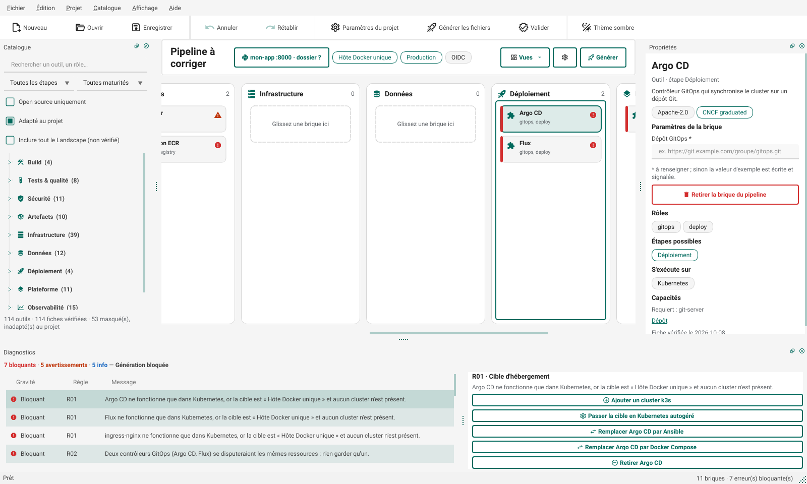
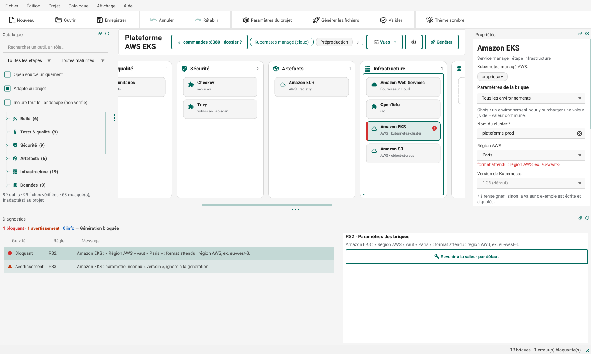
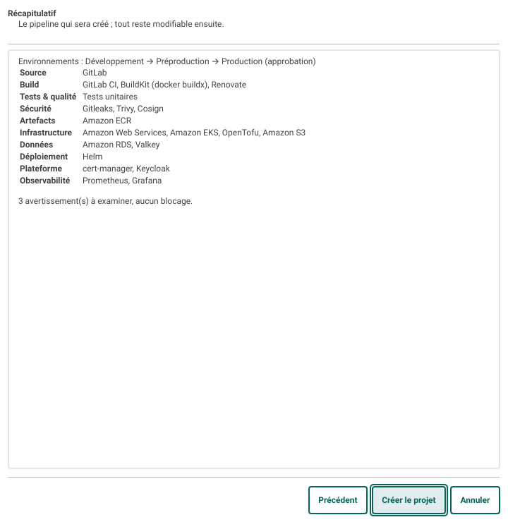
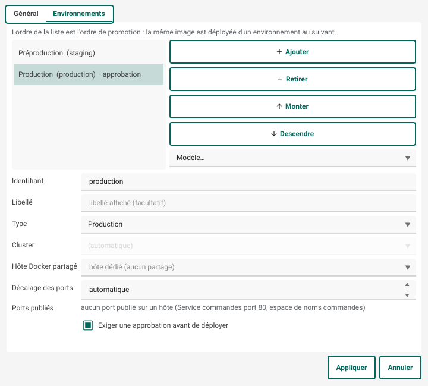
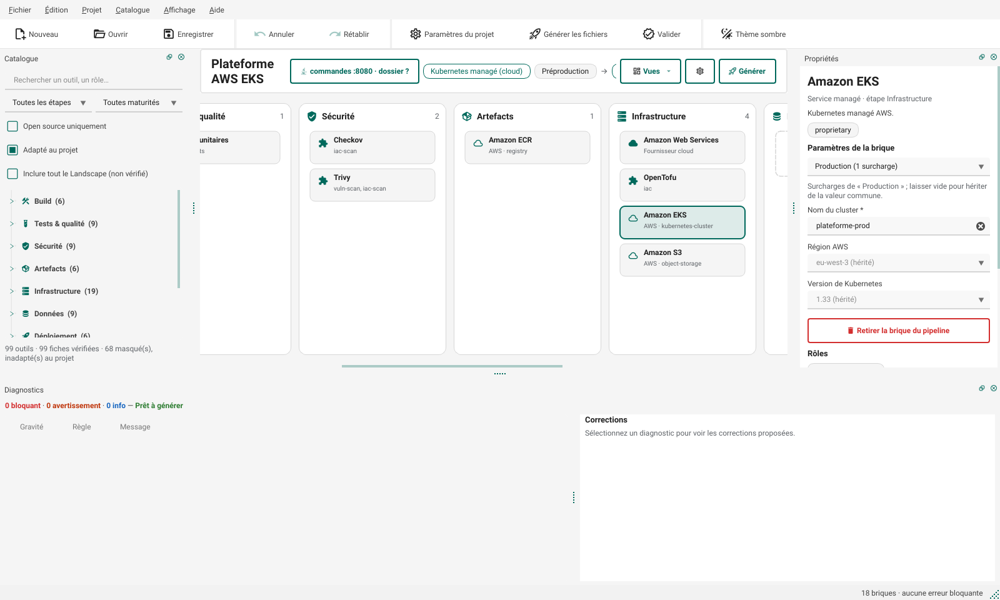
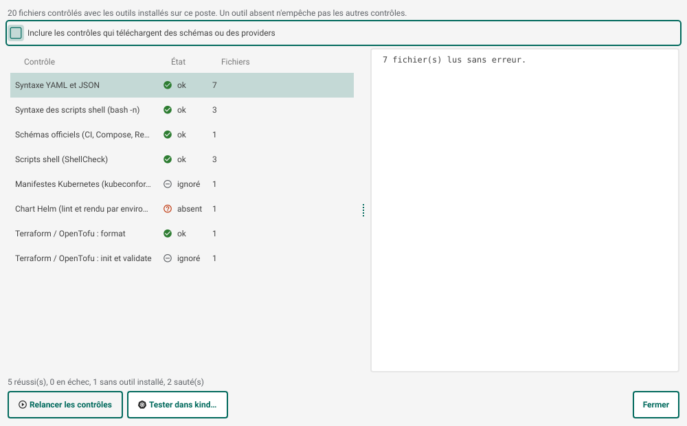
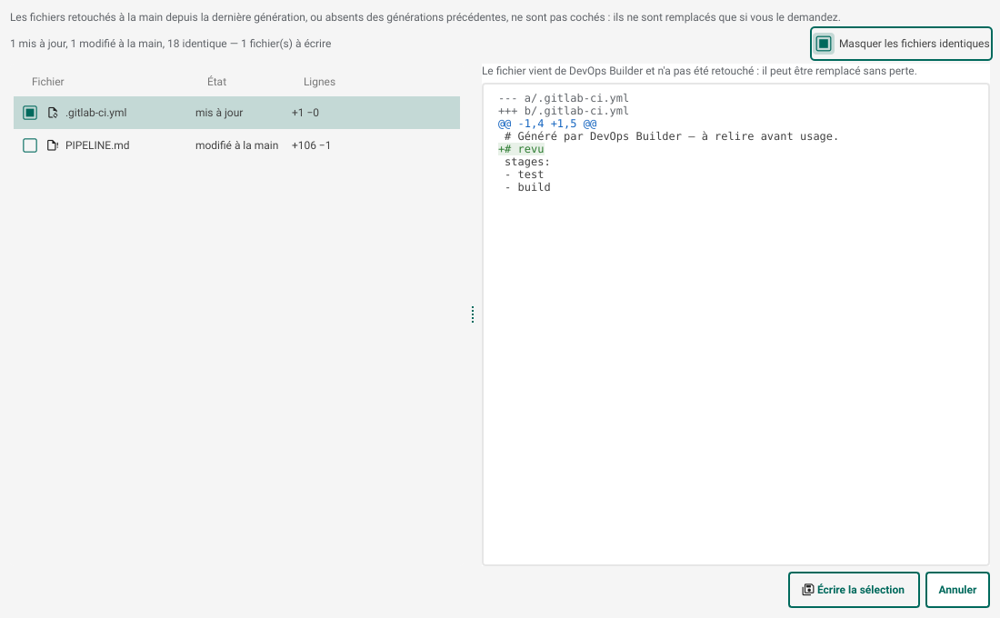
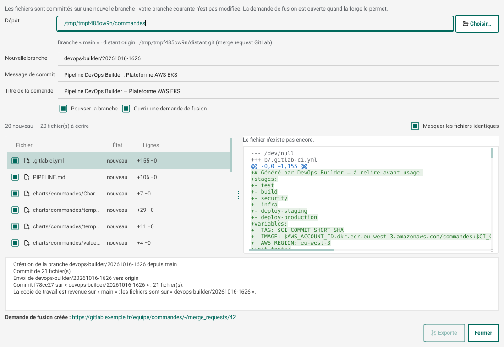
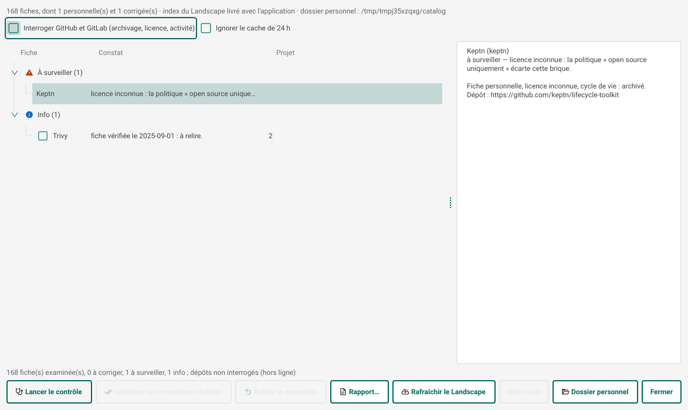
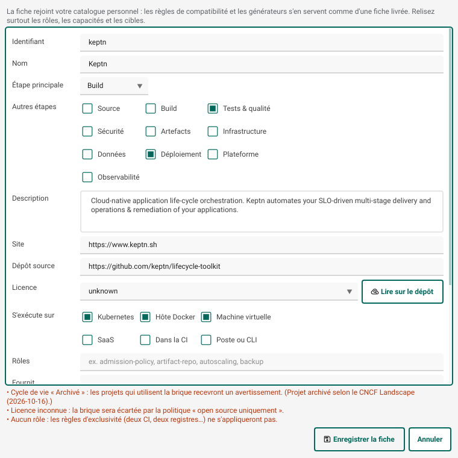
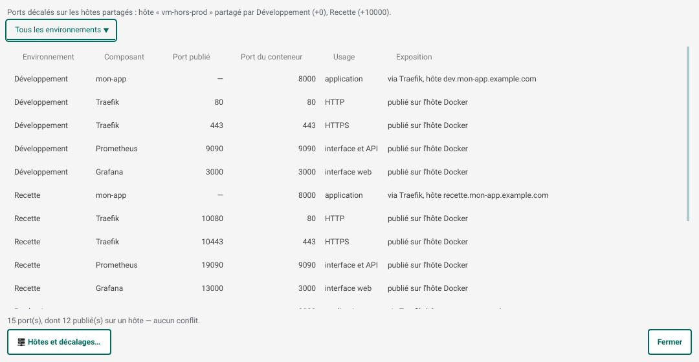
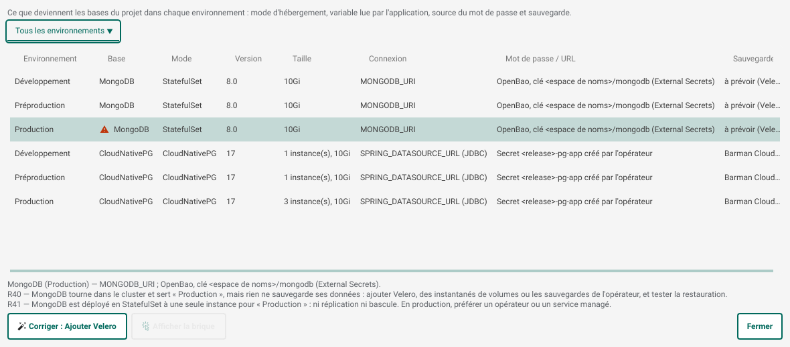